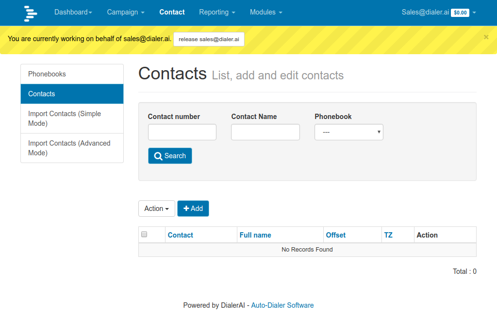

Add User¶
Newfies-Dialer is multi-tenant, so each user or “Manager”, as it is referred to in Newfies-Dialer can run their own campaigns isolated from every other manager on Newfies-Dialer.
The dialer settings are assigned to each manager, and these control the resources that a manager can consume.
Additionally, a voice and SMS (if applicable) gateway is assigned to the Manager, so they can only use the gateway(s) they are assigned.
Add Manager¶
In the General Tab, click Add against Manager, and in the new screen, fill in the username and password. The name and address details are optional.
Select the gateways you are allowing the Manager to use, and select the dialer settings applicable to this manager. You can add more gateways and dialer settings by clicking the + button, and the appropriate screen will appear as a popup.
When you click save, another screen will appear where you can select the Available User Permissions, Choose All. This will give access to the customer screen only, a manager cannot carry out any admin tasks.
Click save once more, and confirm that the new Manager is added and that you can log in with their assigned username and password.
Hijack User¶
In order to provide support to an individual user without needing to know their password, there is a facility for Administrators to log on as them.
List the Managers, then click Hijack against the manager you want access.

You will then be logged on to your Manager’s account.
